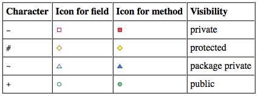

Analizirate podatke o najbogatijim ljudima (i/ili obiteljima) na svijetu koristeći Forbesovu listu milijardera. Svake godine dobijete osvježenu TSV datoteku imena forbes_2022_top500.tsv (encoding utf8). Svaki redak sadrži po jedan zapis (BillionaireDatum), a atributi zapisa su pohranjeni kao TABom odvojene vrijednosti (TSV - tab separated value). Primjeri zapisa milijardera su "1\tElon Musk\t50\t219000\tUnited States" te "3\tBeate Heister & Karl Albrecht Jr. & family\t\t36800\tGermany".
Svaki podatak (BillionaireDatum) ima svoje atribute rank:Integer, name:String,age:Integer, worth:Integer i country:String, gettere za svaki od njih, konstruktor koji prima sve atribute.
Opis atributa:
rank – pozicija na (silazno sortiranoj) listi,name – ime osobe ili obitelji,age – broj godina (može biti nedefiniran kao u drugom primjeru!),worth – bogatstvo u milijunima,country – ime zemlje prebivališta.U zadatku je potrebno napisati klase BillionaireLoader i BillionaireStats.
U svim klasama je potrebno i implementirati metode kako su prikazane na dijagramu klasa. Slobodno možete dodati i implementirati dodatne metode, atribute i konstruktore.
Legenda vidljivosti u dijagramu klasa:

Klasa BillionaireLoader učitava podatkovni skup iz predane putanje te vraća listu BillionaireDatum objekata koji predstavljaju zapise.
Klasa BillionaireStats instancira objekt na temelju predanog podatkovnog skupa koji provodi statistike. Za sve analize se koristi Stream API!
Postoje tri glavne analize, koje trebate implementirati unutar metoda countCountry, countAgeRangei histogram na sljedeći način:
countCountry, vraća broj milijardera sa liste dst koji prebivaju u zemlji countrycountAgeRange, vraća broj milijardera sa liste dst koji imaju dob između lower i upper (uključivo).makeHistogram, zapise između min i max vrijednosti grupira unutar pretinaca širine binWidth te vraća broj elemenata u svakom pretincu. Vraćeni histogram mora biti uzlazno sortirana mapa gdje je ključ bogatstvo (donja granica pretinca), a vrijednost broj elemenata u pretincu.Primjer korištenja:
List<BillionaireDatum> dataset= BillionaireLoader.load("src/main/resources/forbes_2022_top500_mini.tsv");
System.out.println(dataset.size());
System.out.println("country count: " + BillionaireStats.countCountry(dataset,"United States"));
System.out.println("age range count: " + BillionaireStats.countAgeRange(dataset, 27,50));
for (Map.Entry<Integer,Long> worthBucket : BillionaireStats.makeHistogram(dataset,21000).entrySet()) {
System.out.print("("+ worthBucket.getKey() +", "+ worthBucket.getValue()+ ") ");
}
Očekivani ispis (na smanjenoj datoteci koju ste dobili):
11
country count: 8
age range count: 3
(90000, 5) (111000, 3) (153000, 2) (216000, 1)
Napomena: Sve klase i sučelja imaju vidljivost postavljenu na package private i nalaze se u paketu hr.fer.oop.zi.zad1. Svi testovi se izvode nad datotekama drugog sadržaja od onog koji ste dobili.